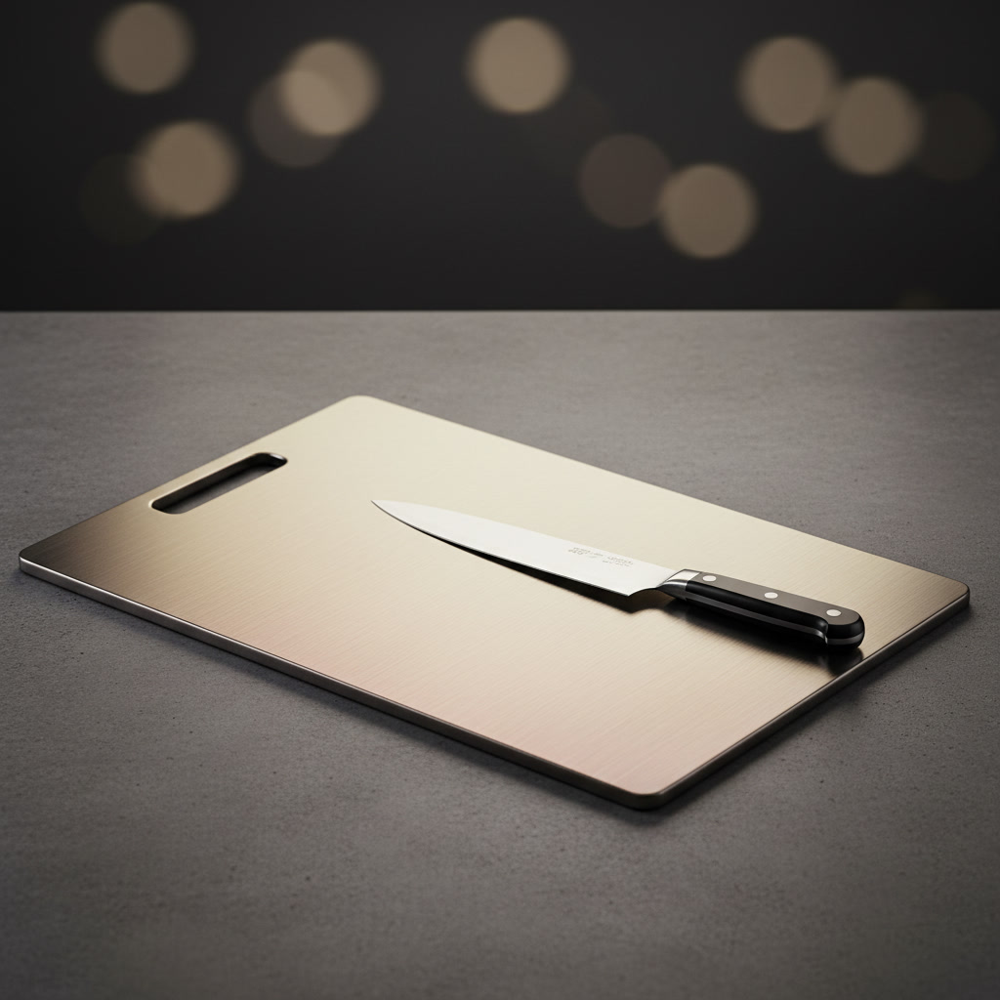
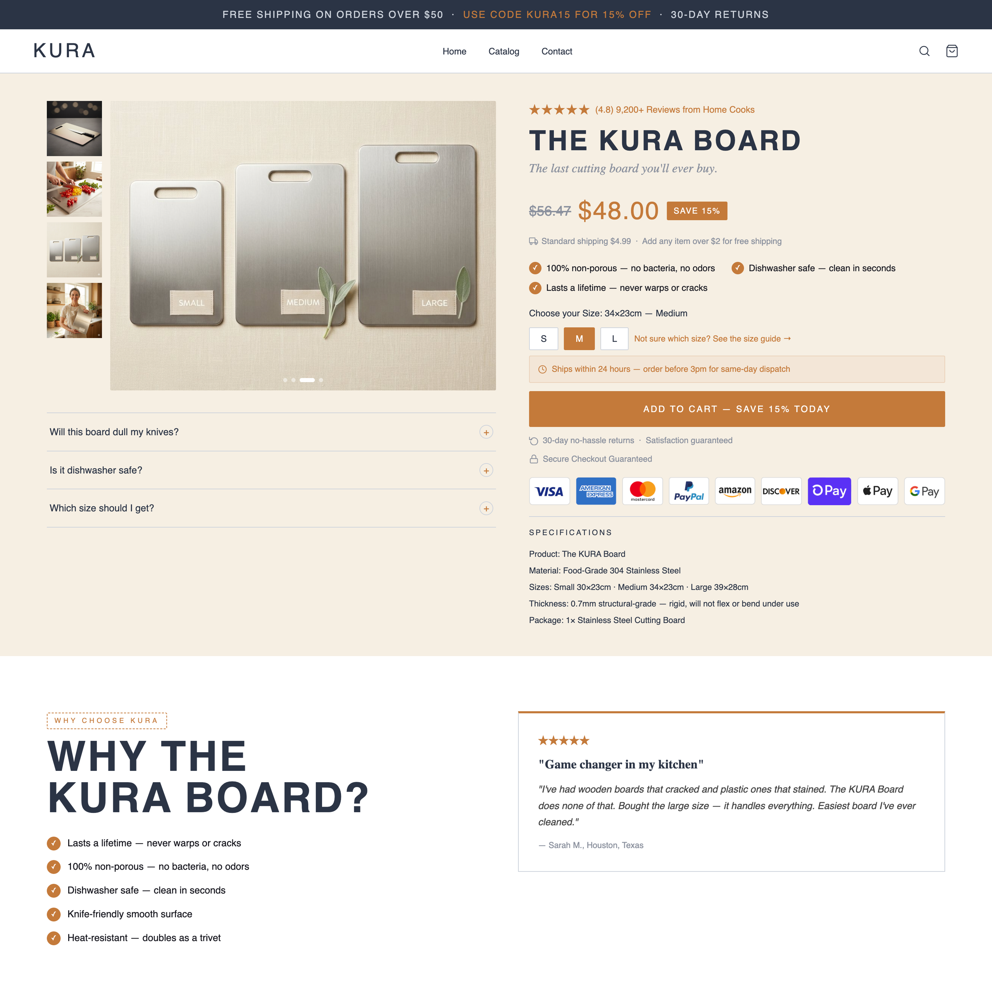
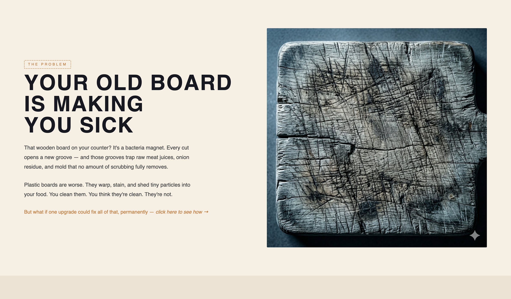
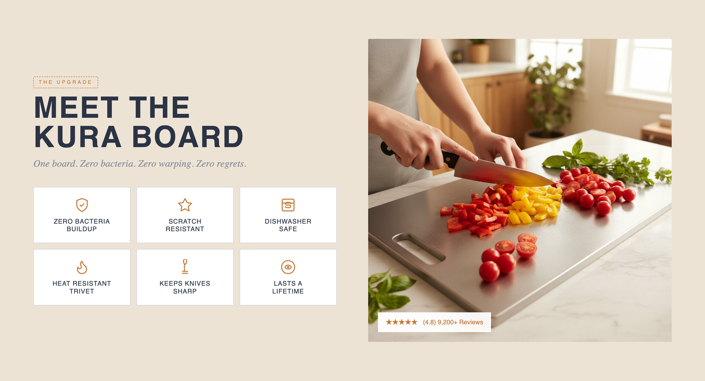
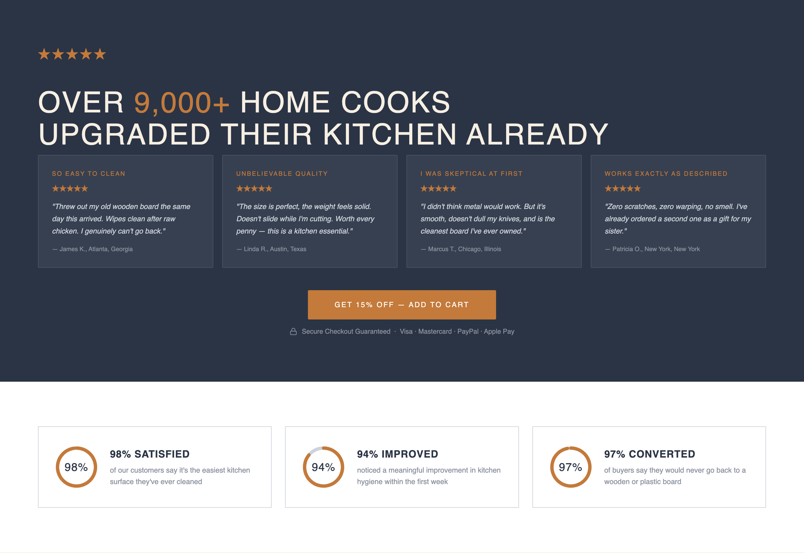
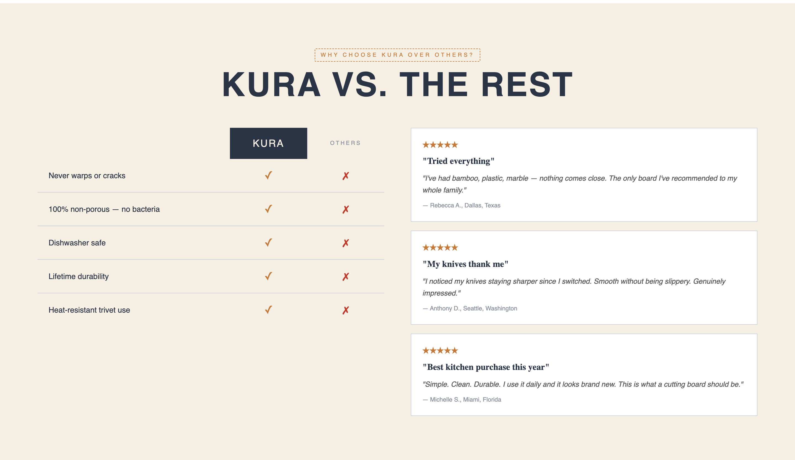
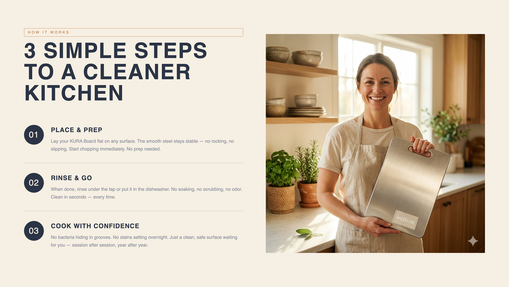

Taking an ordinary dropship product and building an identity around it, then designing a conversion-optimised product page that turns browsers into buyers.

Take a commodity cutting board, the kind sold on every dropship store, and make it feel like it deserves to live on a premium kitchen shelf.
The product itself is undifferentiated. The opportunity is in perception. Build a brand identity, then a product page that answers every objection and removes every reason not to buy, all inside Replo.
Warmth, authority, and cleanliness, three things a kitchen brand must own. The system is intentionally restrained: a warm cream base, a deep navy for authority, and a single burnt orange accent that carries urgency without aggression.
The cream and navy palette positions Kura alongside premium kitchen brands, it reads as editorial and considered rather than cheap and dropshipped. The burnt orange CTA creates decisive moments of urgency without resorting to red alarm-bell tactics that cheapen a brand.
Every section of the page exists with a specific psychological job to do. The sequence mirrors a real sales conversation, intrigue, education, agitation, solution, proof, commitment.
The hero section is a microcosm of the entire page. It must earn trust, communicate value, and invite action, before a single scroll.

People don't buy products, they buy relief from problems. This section manufactures urgency by making the alternative viscerally uncomfortable.

Each feature card directly answers an anxiety created in the agitation section. The grid layout allows comparison at a glance, no reading required.

The navy background creates a deliberate chapter break. It signals: this is official, this is serious, these are real people. The psychological shift is intentional.

The comparison table isn't about winning a feature war, it's about making the $40 price feel like a no-brainer relative to the alternatives a customer already owns.

Beyond the visual design, a set of deliberate conversion mechanics were baked into every section of the page. These are the decisions that separate a pretty page from a profitable one.
One of the most undervalued CRO sections on any product page. "Is this going to change my routine?" is a silent objection that kills conversions. Three numbered steps demolish it.

“The page's job is to remove every reason not to buy, and do it before the customer realises that's what's happening.”
Design Philosophy, Kura Board Build
The entire page was built without writing a single line of custom code. Replo's section-based editor maps directly to the conversion architecture, each psychological section is a discrete Replo section with shared design tokens.
Before building any section, design tokens were established across the Replo project, brand colours, type sizes, spacing units. This ensured visual consistency across 9 distinct sections without hardcoding values.
Each CRO section was mapped to a Replo component type before building, matching the psychological function to the most appropriate visual format.
With the majority of DTC traffic arriving on mobile, each section was designed desktop-first but pressure-tested for mobile conversion parity. Key decisions:
"The design problem was never the cutting board. The design problem was indifference, and how to turn it into urgency."